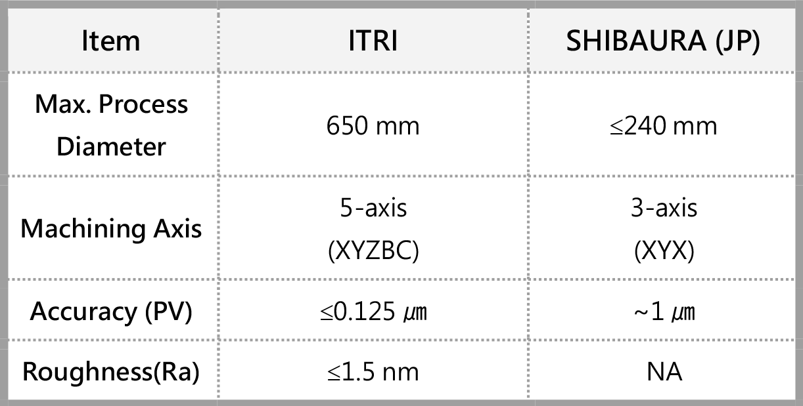

| 五軸超精密加工技術與應用 5-axis Ultra-precision Machining Technology and Application |
| 工研院為建立任意形態顯示與感測製造能量，係完成建置可加 工超大尺寸(最大直徑 650 mm)、不規則形狀顯示光學元件之五 軸(X、Y、Z、B、C)超精密加工設備，其搭配路徑編程技術及刀 具最佳化設計，加工規格可達表面形狀精度(PV) ≤ 0.125 μm、表 面粗糙度(Ra) ≤ 1.5 nm 之高挑戰目標，且結合自有之光學模擬 設計與製作能量，可使現行顯示模組降低光學像差並提升影像 品質，以符合未來前瞻顯示光學元件，如 AR/VR、HUD、3D 立 體顯示器、HDR 顯示器背光模組與浮空顯示等技術開發需求。 In order to develop a optical module design and manufacturing system. ITRI has built a 5-axis ultra-precision machining platform (X, Y, Z, B, C), which can process super-large (maximum diameter 650 mm) and irregular-shaped display optical components. Combined with path programming technology and tool optimization design, it can reach the challenging target of form accuracy PV (peak-to-valley) lower than 0.125 μm, and surface roughness Ra is less than 1.5nm. And combined with ITRI‘s own optical simulation design and production, energy, we can reduce optical aberrations and improve image quality, and to meet the needs of future advanced display optical components, such as AR/VR, HUD, 3D stereoscopic displays, backlight modules of HDR display and floating image displays.  |
| 技術洽詢聯絡人：林立婷 聯絡電話：03-5917410 E-mail：debbie0424@itri.org.tw |